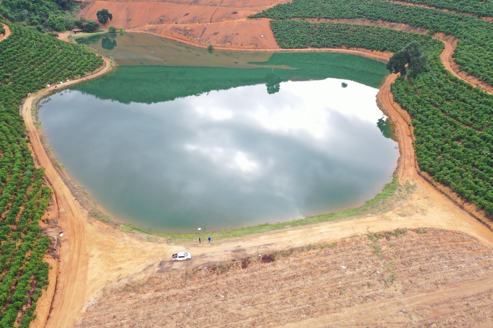
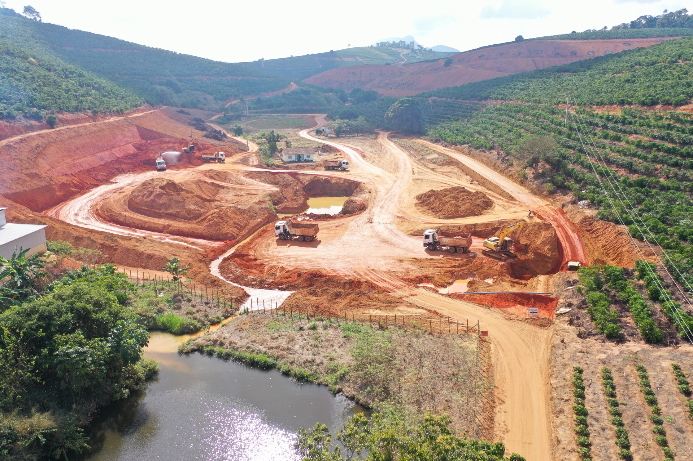
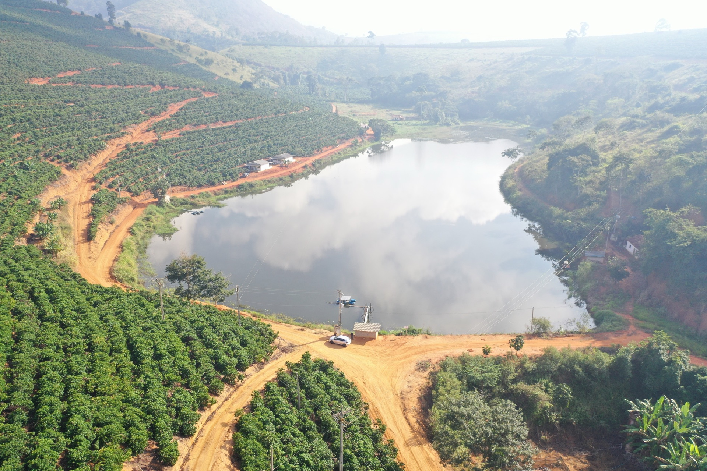
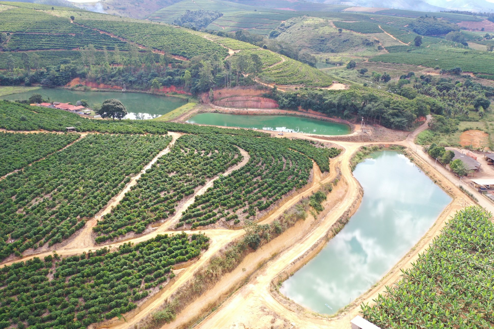
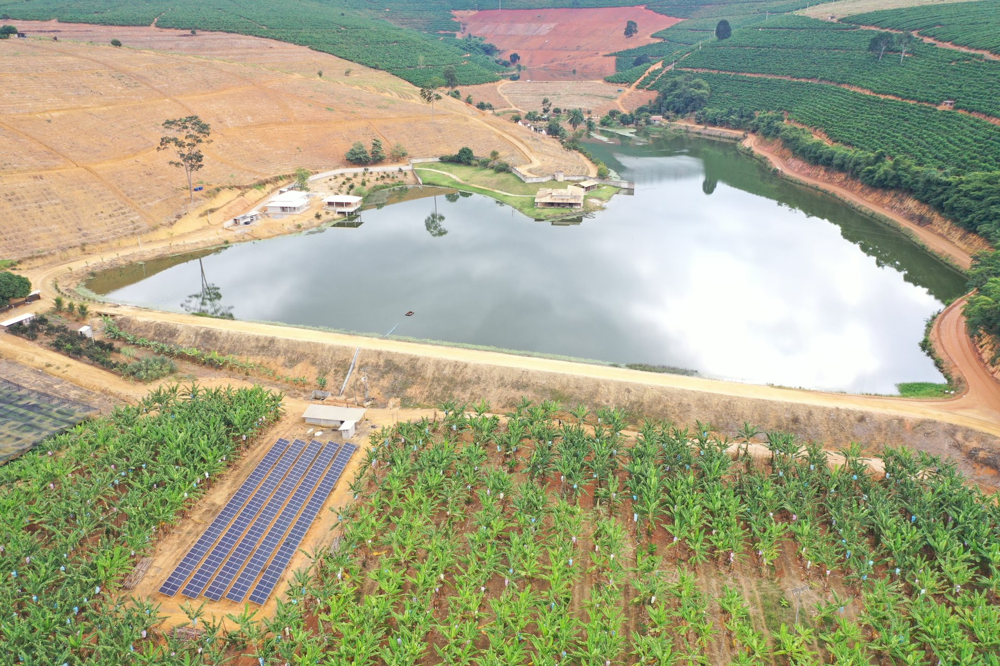
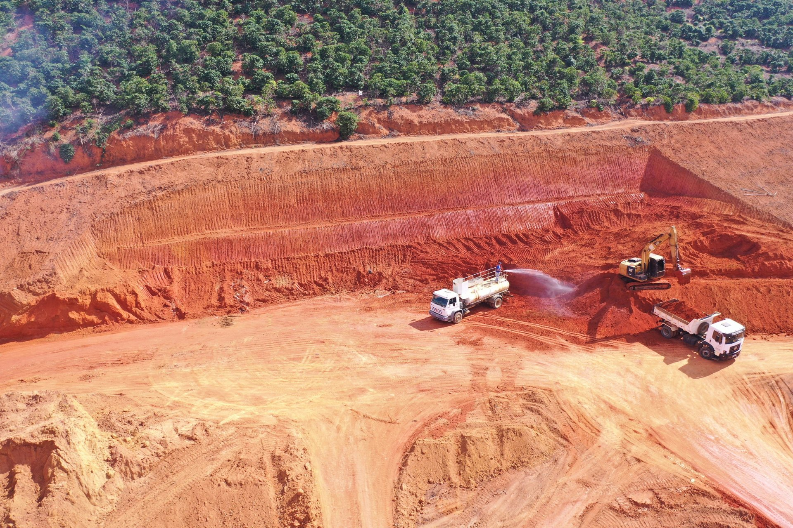

← Obras






01 / 06
Supervisão e segurança de barragens
Supervisão de 15 Barragens Rurais
15barragens de terra
13projetos de adequação
16relatórios de supervisão
Contexto
Obras de construção, alteamento e recuperação em 15 barragens rurais ao mesmo tempo.
Entrega
Supervisão das obras com controle de topografia e compactação, inspeções de segurança, estudos de estabilidade e hidrologia, laudos e projetos de adequação.
Resultado
Todas as barragens acompanhadas mês a mês, com a segurança documentada.